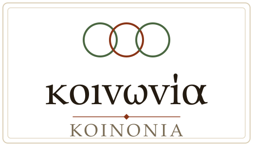
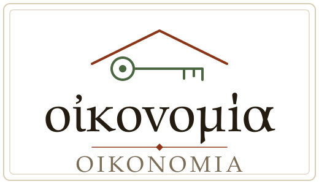
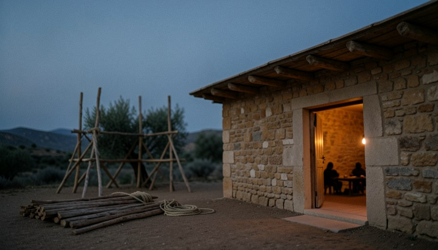
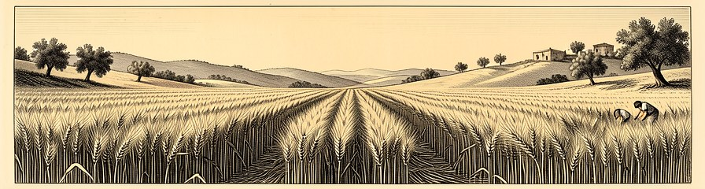
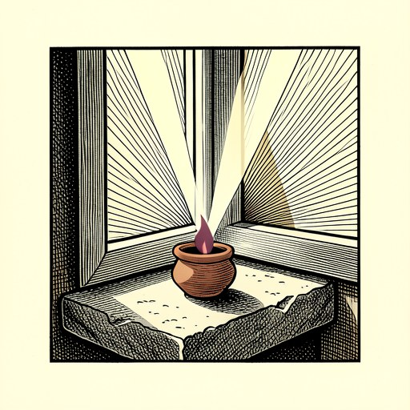

殿宇情结 ↔ Oikos消费主义 ↔ Koinonia圣职阶级 ↔ Oikonomia
若把建筑、聚会、组织全部拿走，
剩下的是什么？
第 2 讲 · 本体
教会是什么、如何活、怎样运行


若把建筑、聚会、组织全部拿走，
剩下的是什么？
用一句话分别界定 Oikos、Koinonia、Oikonomia；说出治理的目的（合一与圣洁）和四道护栏。
从“参加聚会”转向“进入彼此的生命”：愿意让钱包、家门、生命向弟兄敞开。
定下一项可以立即实践的 Koinonia 行动；找出所在群体中一道需要拆的“隔断墙”。
上帝国度治理的原始单元。
共有、参与；几乎总伴随物质资源的共享。
为合一与圣洁而设的经纶。
上帝不是在人犯罪之后才启动“B 计划”。
一道关于国度扩张的王权命令。
在神学逻辑上从属于创造，是一次重新授权：恢复我们作“君尊祭司”的地位（彼前 2:9）。
全书的关键经文，关键词正是 Oikonomia：
在日期满足的时候，万有在基督里同归于一。
安家、垦地、生儿育女；几代之后，壮年的家庭翻过山岭去开垦下一处河谷。
属灵的繁衍与此同构。
三一神位格之间的互渗互存（Perichoresis，περιχώρησις），投射为“互为肢体”。保罗笔下的教会，没有现代的“会员制”。
Lesslie Newbigin：“教会不是宣教的目的，宣教是教会的本质”。David Bosch：宣教首先是上帝自己的事（Missio Dei，上帝的差遣）。

殿只是中途的脚手架，家才是终极的居所
AI 生成示意图，非考古复原
只有家庭天然具备“生养”和“遍满”这两种能力。
新耶路撒冷没有殿，却被称为“羔羊的新妇”。
机构能保存水、分配水，却不能自己生出水来。
水库只能存水，泉源自己会涌流
AI 生成水墨示意图
亚当与夏娃被直接指派为“治理这地”的执行者；上帝拣选亚伯拉罕，是要他带领全家遵行祂的道。
Oikos 是传递信仰、执行治理权柄的最小作战单位。
耶稣把遵行神旨意的人，称为自己的家人。早期教会是一个“拟亲属”（fictive kinship）的家庭共同体。
现代教会很少把自己当作“神的家”。
失去了圣殿、祭司、节期，仍立志不玷污自己。外面的圣殿倒塌之后，心里的教导成了他唯一不会被摧毁的祭坛。
信先在外祖母罗以和母亲友尼基心里。
“保罗是收割者，但罗以和友尼基才是耕种者。”
耶稣设立门徒：“要他们常和自己同在，也要差他们去传道”——同在在差派之前（可 3:14）。
硬件依赖；软件依赖（“店长”“营业流程”“服务团队”）；成本指向维持。
“建筑不会生建筑，程序不会生程序，预算不会生预算。”
结果：加法
从餐桌开始；在共同生活中成长；以细胞分裂繁殖；不依赖稀缺资源。
“顺服的门徒，是唯一一种可以自我复制的资源。”
结果：乘法
机构化教会的“三个头”：建筑、牧师、行政体系。
“结构上不可被摧毁（海星），形态上不可被发现（兔子）。”
若 Oikos 是细胞，Koinonia 就是流在细胞之间的血液与神经系统。
城门口公开审判，设逃城
申 16:18 · 诗 89:14
禧年：“地是我的”；不向弟兄取利；安息年豁免
利 25:23 · 申 15:1-2
不割尽田角：“机会之地”，不是“救济金”
利 19:9-10
家庭即学校
申 6:7 · 耶 31:33
“如果我们连旧约以色列在律法层面所要求的‘消除贫穷’都做不到，又凭什么宣称自己拥有了更美之约？

不割尽的田角：写进律法里的怜悯
AI 生成铜版画示意图
雅各、约翰与西门彼得是捕鱼的“伙伴”，原文 κοινωνοί（koinōnoi，合伙人），与 Koinonia 同源。
共享同一艘渔船、同一张网、同一次出海的盈亏、同一份生意的命运。
“一个信徒口口声声说他‘与弟兄相交甚密’，但他的钱包对弟兄的需要从来没有真正打开过，那么按照新约的语义标准，他和那位弟兄之间根本就还没有 Koinonia。”
“凡物公用”不是制度性的共产：田地没有卖，仍是自己的（徒 5:4）；它是 Koinonia 生命的自然流露。
一道可见的弧线：犹太人与外邦人是一个身体。马其顿众教会“再三求”准他们“有份”——原文就是 koinōnia。
尤利安的观察：早期基督徒不仅照顾自己中间的穷人，也照顾外邦人中间的穷人。
你最近一次真实地向弟兄敞开自己的缺乏，是什么时候？
“家教会运动如果只是把聚会的地点从教堂搬到客厅……那么这场运动就只完成了一次空间上的迁移，没有完成本体上的革命。
共有
参与
分担
治理的目的、权柄的来源、领袖的样子、权力的边界。
二者是三一神本体的形象在祂家中的投射：神是合一的（Perichoresis），神是圣洁的（约一 1:5）。
KPI 化的同工考核
SWOT 式年度规划
OKR 式事工目标
会众满意度调查
问题出在背后的假设：把教会当作一个可被管理学方法论所改进的“组织”，忘了它是一个靠圣灵带领的“神家”。
弗 1:10“同归于一”：ἀνακεφαλαίωσις，重新置于一个元首之下。
弗 3:2：使徒的教训本身就是神家的宪法和施工图。
弗 3:9-10：犹太人与外邦人同桌、奴隶与主人互称弟兄，是向灵界的宣告。
经线：西 3:14“爱心就是联络全德的索子”（σύνδεσμος τῆς τελειότητος）。
两种异化：巴别塔有合一无圣洁；库姆兰有圣洁无合一。
“福音在这里不是被引用的经文，而是被演示的生命。”
“我们是一个新人，不是几群人。”
保罗刻意避开统治词汇，改用 διάκονος（仆人，本义侍餐者）、συνεργός（同工）、πρεσβύτερος（长老）。
“师傅虽有一万，为父的却是不多”：师傅关注你知道什么，父亲关注你成为什么。
“他必兴旺，我必衰微。”
如果我明天突然消失，这群人是会瘫痪，还是会继续行走？

点着的明灯，甘心让位给日出
AI 生成麻胶版画示意图
契约说“只要你满足条件，我就履行义务”；盟约说“无论发生什么，我都不离弃你”。可是“我们是盟约关系”也可能被拿来辖制人，所以需要护栏。
提前 2:5；重大教义决定由长老群体集体商议。
“成全”是修补渔网，使之能再打鱼。
限于教义、圣洁、秩序；侵入私域是邪教化的起点。
向网络中独立的父老申诉；保护申诉者。
在我们的群体中，Koinonia 目前更像“活动的热闹”，还是“生命的共有”？请按钱包、家门、生命三项，各举一个具体证据。
对照四道护栏，我们的领袖结构缺哪一道？缺的那一道最可能在哪里出问题？
用施洗约翰原则自测：如果我明天突然消失，我带领的这群人会瘫痪，还是继续行走？若是前者，这个季度可以把哪一件事交出去？
把建筑、聚会、组织都拿走，
剩下的那一个家，才是教会。